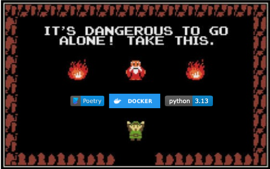
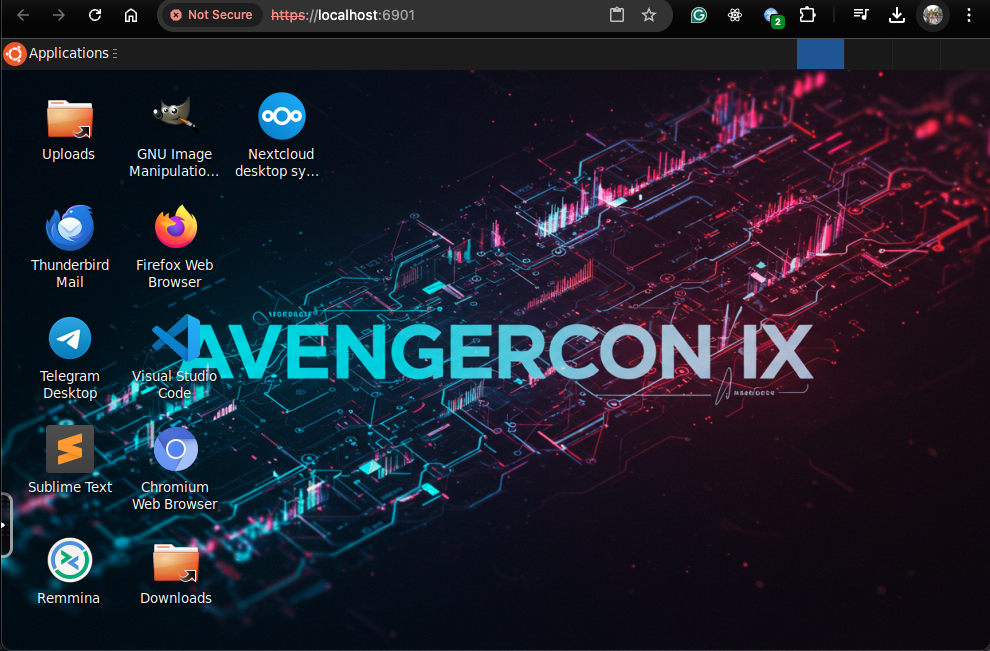
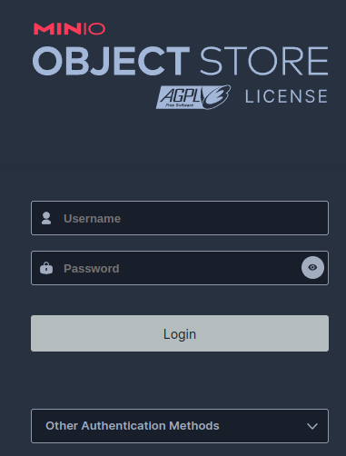

Hello, Workshop!
This is the beginning of our journey. Our goal is simple but not always easy: can we get our developer environment setup?

Get Ready: System-level installation¶

Dev Environment Options
This is the recommended way to participate in the workshop. It ensures you have gone through each step to prepare
your local dev environment to rapidly work with different python versions (via pyenv) and build, test, and
publish python wheels using poetry.
For those who don't want to make any adjustments to their local dev environment beyond running Docker containers, a Kasm Workspace with Ubuntu 22.04 Jammy Jellyfish and Python 3.13 is provided.
For those on a Unix operating system:
chmod +x ./run_dev_desktop.sh
./run_dev_desktop.sh <flag>
For those on a Windows operating system with Windows Subsystem for Linux (WSL) enabled:
bash run_dev_desktop.sh <flag>
For those on an x86/AMD64 architecture CPU (Intel, AMD, etc.), running run_dev_desktop.sh with the -d flag will
pull the AMD64 image from GitHub. For those on an ARM architecture CPU (Mac M1, etc.), use the -m flag to pull
an ARM compiled workspace from Docker Hub. If neither options work, use the -l flag to locally build the image.
Please note that locally building the image may take several minutes to download and build.
The Kasm Workspace is accessible at https://localhost:6901/
username: kasm_user password: avengercon-2025

After successfully loging in for the first time, stop the deployment with
ctrl+c or control-c in the terminal used to run the script. Then uncomment the following lines in the appropriate
docker-compose-dev-container.<architecture>.yaml file to get a live sync of the workshop files inside the
Kasm Workspace Ubuntu desktop. If you're using a visual IDE like VSCode or PyCharm, select the commented lines
and press ctrl + / or ⌘ + / to quickly uncomment.
| docker-compose-dev-container.ARCHITECTURE.yaml | |
|---|---|
1 2 3 4 5 6 7 8 9 10 11 12 13 14 15 16 17 18 19 20 21 22 23 24 | |
With the updated docker-compose file, re-run run_dev_desktop.sh as before (don't forget any flags) and log
back into the Kasm Workspace. You should now see an avengercon_2025 folder in the Ubuntu desktop.
Last Steps!
- In Kasm Workspace, open a terminal and run the
kasm-ubuntu-python-final-setup.shscript. - Verify
python --versionandpoetry --versionworks in VSCode terminal - Add the Python VSCode extension
You'll need the following software installed to begin:
Optional software
To keep Python from messing up your OS configs, It is recommended to install & manage Python interpreters using a manager like pyenv or hatch. This will allow you to add/remove specific and multiple Python environments on your system. Testing your code against multiple versions of Python is a necessity for professional projects!
Poetry is an alternative to pip.
Those who prefer pip or other Python environment tools are welcome to use the
requirements-dev.txt file in the requirements directory of this repo.
Why Poetry?
While hatch and other tools are promising, as of this workshop Poetry remains one
of the best developer experiences (DX) for setup of python virtual environments and
modern pyproject.toml based Python packages.
Git GUI Clients simply save time. While it may feel nice to flex that you have every possible permutation of Git commands memorized, 2-second point-and-click to stage dozens of files and side-by-side highlighted diffs are the way to go.
Get Set: Prepare your virtual environment¶
Install the avengercon package and dependencies¶
- Establish a virtual environment with
poetry env activateor use pip- Look for an additional command Poetry recommends you run. It'll like start with
source ...
- Look for an additional command Poetry recommends you run. It'll like start with
- Install
avengercon& dependencies withpoetry installor use pip - Confirm that the local
avengerconpackage is available in your virtual environment
(avengercon-py3.13) $ python -m avengercon
Hello, Workshop!
Configure your IDE to use the virtual environment¶
VSCode, PyCharm, and most other popular Integrated Development Environment (IDEs) support intellisense and other productivity boosters when properly configured to use the project's virtual environment.
Configure IDE to use the Poetry virtual environment
- Open the VSCode Command Pallet with
cmd + shift + porcommand + shift + p Python: Select Interpreter- Select the Python interpreter located in
./.venv/...
- PyCharm main menu >
Settings Project: avengercon_2025>Python InterpreterAdd Local Interpreter>Select Existing- Type
Poetry>Poetry env to use> select the Python interpreter located in the./.venv/binfolder
Generate your .env file¶
Using a terminal from the top level avengercon_2025 directory, run the
initialize_env.sh script to dynamically generate configuration metadata in a .env
file.
bash scripts\initialize_env.sh
chmod +x scripts/initialize_env.sh
./scripts/initialize_env.sh
You should now see a .env, .localhost.env, and .personal.env files in your avengercon_2025 directory that looks
something like this:
# Used by run_*.sh scripts & avengercon module to dynamically configure localhost
# development and testing environment variable coordination.
# Valid log level values: 'critical', 'error', 'warning', 'info', 'debug'
LOG_LEVEL=info
# Traefik settings and labels
HTTP_PORT=57073
DOMAIN=localhost
...
🚀 Launch!¶
Using a terminal from the top level avengercon_2025 directory, launch the docker
compose deployment using the run_dev.sh script.
bash run_dev.sh
chmox +x run_dev.sh
run_dev.sh
Keep your containers deployed
Don't close the terminal running your deployment! We'll be using the logs that appear to help monitor the state of our workshop's services and code.
Port conflicts
If you're already running a Traefik reverse proxy or services that use the ports
listed in the .env, you will need to adjust the ports being used for this workshop.
If everything is going well, you should not see any "ERR" or "ERROR" in the logs that appear in your terminal.
...
avengercon-minio | Documentation: https://min.io/docs/minio/linux/index.html
avengercon-minio | Warning: The standard parity is set to 0. This can lead to data loss.
avengercon-proxy | 2024-02-15T16:35:39Z INF Traefik version 3.0.0-rc1 built on 2024-02-13T13:41:20Z version=3.0.0-rc1
avengercon-proxy | 2024-02-15T16:35:39Z INF
avengercon-proxy | Stats collection is disabled.
avengercon-proxy | Help us improve Traefik by turning this feature on :)
avengercon-proxy | More details on: https://doc.traefik.io/traefik/contributing/data-collection/
avengercon-proxy |
avengercon-proxy | 2024-02-15T16:35:39Z INF Starting provider aggregator aggregator.ProviderAggregator
avengercon-proxy | 2024-02-15T16:35:39Z INF Starting provider *docker.Provider
avengercon-proxy | 2024-02-15T16:35:39Z INF Starting provider *traefik.Provider
avengercon-proxy | 2024-02-15T16:35:39Z INF Starting provider *acme.ChallengeTLSALPN
avengercon-minio |
avengercon-minio | You are running an older version of MinIO released 1 day before the latest release
avengercon-minio | Update: Run `mc admin update ALIAS`
avengercon-minio |
avengercon-minio |
avengercon-whoami | 2024/02/15 16:38:02 172.27.0.3:45642 - - [15/Feb/2024:16:38:02 +0000] "GET / HTTP/1.1" - -
...
Verify you can access your deployed services¶
Ensure you can open a web browser to the following local services. For each button, you probably want to right-click and open in new tab.
If anything fails to open, double-check the port in the opened link matches the port
specified by HTTP_PORT in your .env configuration. (default is 57073; l33t speak
approximation for "Stone")
Name: avengercon_whoami
Hostname: b967780eb9c6
IP: 127.0.0.1
IP: ###.###.###.###
RemoteAddr: ###.###.###.###:42012
GET / HTTP/1.1
Host: whoami.localhost:57073
User-Agent: Mozilla/5.0 (X11; Linux x86_64) AppleWebKit/537.36 (KHTML, like Gecko) Chrome/121.0.0.0 Safari/537.36
Accept: text/html,application/xhtml+xml,application/xml;q=0.9,image/avif,image/webp,image/apng,*/*;q=0.8,application/signed-exchange;v=b3;q=0.7
Accept-Encoding: gzip, deflate, br
...
The login and password is in your .env as the MINIO_ROOT_USER
and MINIO_ROOT_PASSWORD values
